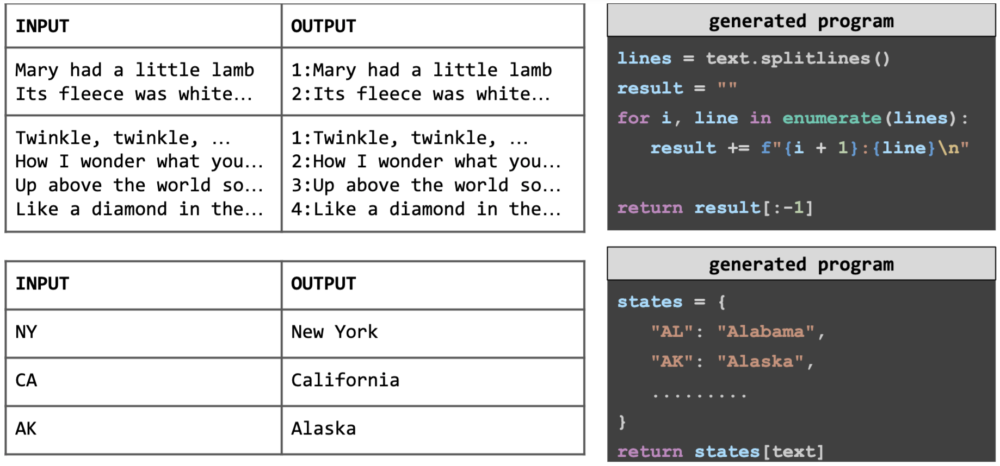
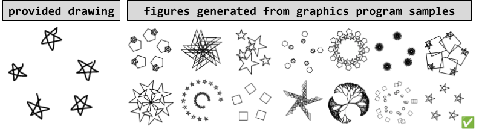
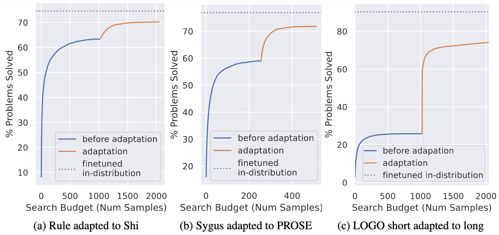

Programming-by-Examples (PBE) aims to generate an algorithm from input-output examples. Such systems are practically and theoretically important: from an end-user perspective, they are deployed to millions of people, and from an AI perspective, PBE corresponds to a very general form of few-shot inductive inference. Given the success of Large Language Models (LLMs) in code-generation tasks, we investigate here the extent to which LLMs can be said to have 'solved' PBE.
We experiment on classic domains such as lists and strings, and an uncommon graphics programming domain not well represented in typical pretraining data. We find that pretrained models are not effective at PBE, but that they can be fine-tuned for much higher performance, provided the test problems are in-distribution. We analyze empirically what causes these models to succeed and fail, and take steps toward understanding how to achieve better out-of-distribution generalization. Collectively these results suggest that LLMs make strong progress toward solving the typical suite of PBE tasks, potentially increasing the flexibility and applicability of PBE systems, while also identifying ways in which LLMs still fall short.
Programming-by-Example (PBE) is a code generation problem that has been intensively studied in the program synthesis community over the last few decades. Given input-output examples (i.e., test cases), the goal is to generate a program that can pass those examples. We explore the use of Large Language Models (LLMs) for PBE and find that LLMs can be fine-tuned to achieve state-of-the-art performance in PBE tasks.
We apply our method into three programming-by-example domains:
Traditional approaches to programming-by-example use domain-specific programming languages designed to enable efficient search and/or bias the system toward target functions. Although using DSLs allows for more efficient search, they have the shortcoming of not being able to cover all types of problems from users. We find that by using Python, the resulting system can cover a broader scope of problems than classic symbolic methods.
PBE with LLMs allows using general-purpose programming languages which can mix string and numerical operations in ways not allowed by domain-specific languages (top), and allows world knowledge to inform code generation (bottom). I/Os and code partly elided for space
However, the traditional symbolic search approach argubly has the advantage of being able to generalize to out-of-distribution problems. We observe that LLMs may not be good at problems which is not in the training distribution.
An example of very out-of-distribution problems: hand-drawn examples of LOGO programs.
We propose a simple adaptation method to improve the performance on out-of-distribution problems. We find that by using the problems that from the target distribution, we can adapt the model to perform well on out-of-distribution problems without manual annotation.
Adaptation results on three domains. The x-axis is the number of samples used. The y-axis is the performance on out-of-distribution problems. The curve marked as "Before Adaptation" is the performance of the model before adaptation and shows a domain gap compare to models trained on in-distribution problems. The curve marked as "After Adaptation" is the performance of the model after adaptation and shows that we can close the domain
@misc{li2024programmingexamplesolvedllms,
title={Is Programming by Example solved by LLMs?},
author={Wen-Ding Li and Kevin Ellis},
year={2024},
eprint={2406.08316},
archivePrefix={arXiv},
primaryClass={cs.CL},
url={https://arxiv.org/abs/2406.08316},
}